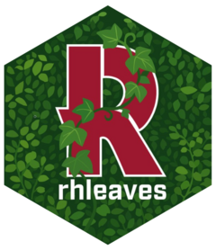

Leaf Attributes Dataset
rhleaves.RdAttributes measured on a sample of leaves collected from the living walls at Rose-Hulman Institute of Technology in April, 2025.
Format
A data frame with 200 rows and 10 variables:
- Wall
Indicator of which wall the leaf was taken from (Moench, Union).
- Location
Indicator of location on wall from which leaf was taken (Upper Left, Upper Right, Lower Left, Lower Right).
- Species
Indicator of species of leaf (Dwarf Anthurium, Ficus Elastica Burgundy, Neon Pothos, Philodendron Cordatum, Schefflera Luseane, Silver Satin Pothos, Syngonium Podophyllum).
- Stem Diameter
Diameter (millimeters) of the stem at the base of the leaf.
- Mass
Mass (grams) of leaf without stem.
- Length
Length (centimeters) of leaf along midrib. For syngonium podophyllum species, length is longest vertical distance from tip when oriented with tip upward.
- Width
Width (centimeters) of leaf at widest point perpendicular to midrib.
- Image Name
File name corresponding to the photo of the leaf.
- Supervised Length
Length (centimeters) of leaf estimated from the image after leaf was extracted using photo software.
- Supervised Width
Width (centimeters) of the leaf estimated from the image after leaf was extracted using photo software.
- Supervised Area
Area (square centimeters) of the leaf estimated from the image after leaf was extracted using photo software.
- Unsupervised Length
Length (centimeters) of leaf estimated from the image using the same settings on all images.
- Unsupervised Width
Width (centimeters) of the leaf estimated from the image using the same settings on all images.
- Unsupervised Area
Area (square centimeters) of the leaf estimated from the image using the same settings on all images.
Details
See the Data Collection vignette for a description of the data.
In addition to the data presented here, the images used to extract the `Supervised` and `Unsupervised` measurements are available within the package. These are the in compressed ZIP files: `original-images.zip` contains the original images, `oriented-images.zip` renumbers the images and orients each the same way, and `extracted-images.zip` is the result of extracting the leaf region from each photo.